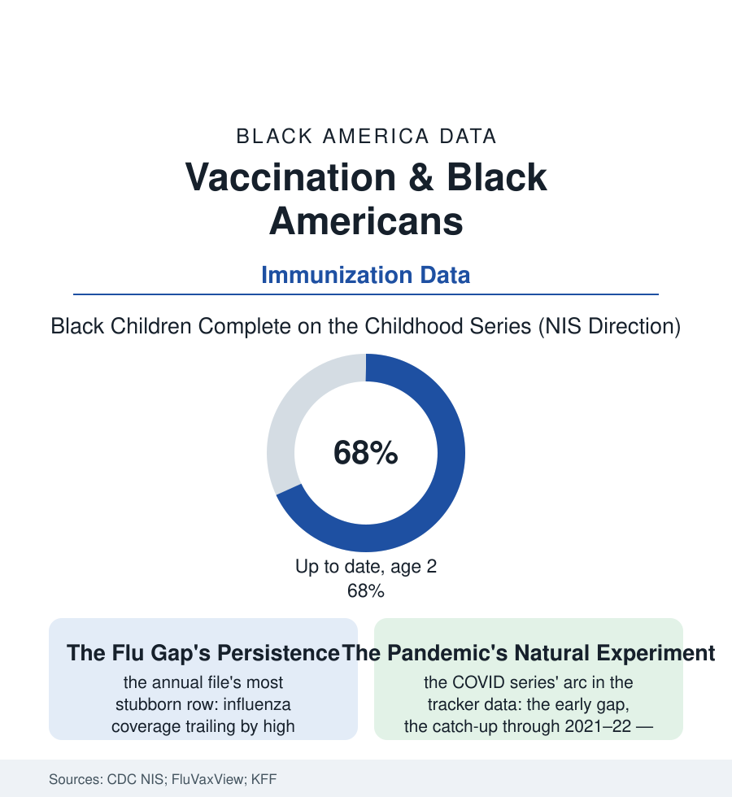

Black Public Health
The Needle's Ledger: Vaccination in the Data
Flu shots, childhood series, and the pandemic's great catch-up: the vaccination file measures a gap that closed more in three years than in thirty — and the trust research that explains both the gap and the closing.

The vaccination file is the health section's trust instrument — a needle that measures, each season, the distance between a population and its medical system. The coverage data run in two registers: the routine gaps that persist by single digits across decades, and the pandemic's demonstration that the distance can close at a speed the field had never recorded. This article reads the needle's ledger. Both registers are this file's whole subject here, stated plainly.
The Routine Rows
The childhood series first, in the National Immunization Survey's annual tables: Black toddlers' completion of the combined series running modestly below the national figure — the gap's anatomy, in the survey's own breakdowns, being substantially logistical (the missed opportunities of the fragmented visit file, the series' many doses against the working family's appointment slack, the Vaccines for Children program's coverage making the shots free and the schedule still the barrier) rather than refusal — the outright-exemption rows running, in the school-entry data, lower in the Black rows than in the affluent enclaves whose hesitancy dominates the coverage of hesitancy. The adult rows carry the heavier ledger: the influenza coverage gap, the file's most persistent single statistic — Black adults' flu vaccination trailing by roughly eight to ten points across the FluVaxView decades, through campaigns aimed at it by name — its correlates in the research reading like this section's table of contents (the primary-care attachment gap, the pharmacy file's deserts, the occupational rows without the paid sick day the shot's sore arm argues for, the clinician-recommendation studies' key finding: the provider's spoken offer as the single strongest predictor of the shot, and the offer's own racial rows in the audit literature). The pneumococcal and shingles rows of the senior file repeat the pattern at smaller scale. Taken whole, the routine file describes not a population refusing prevention but a prevention system under-delivering to it — at the margin of the appointment, the recommendation, and the stocked shelf — with the belief gap, where the surveys isolate it, real but secondary, and substantially a rational reading of the delivery record itself.
The Great Catch-Up and Its Machinery
The pandemic then ran the file's controlled experiment at national scale: the COVID vaccination campaign's first months reproducing the routine map (the early coverage gaps, the site deserts, the appointment systems' digital gates) — and its middle months producing the fastest gap closure in the CDC's recorded history, the Black coverage rate climbing through 2021 to rough parity in the adult primary series in the tracker and survey data. The post-mortems credit a machinery this atlas recognizes on sight: the community institutions conscripted as the delivery system (the churches as vaccination sites, the barbershop and salon programs of the health file's most charming literature, the Black clinicians' national corps doing media in their own voices, the fraternity and sorority networks' drives) — the trust transferred horizontally, neighbor to neighbor, through the organizations the affiliation file counts — against the background of a threat whose mortality data, in this population, needed no persuasion campaign. The bivalent and booster rows then reverted to the routine pattern (the gaps reopening as the emergency machinery stood down), the file's most instructive datum: the closure was not a change of mind but a change of delivery — proof, at scale, that the gap lives in the system's reach more than in the population's answer. The forward file is the routine one, awaiting the machinery's return in some durable form: the community-site funding, the recommendation's equity audit, the school-located clinics of the school-health file. The needle measures trust, the saying goes. The pandemic's data amend it: the needle measures delivery, and trust — the community's own, in its own institutions — was the delivery that worked.
Reading the Vaccination Data
The vaccination file is the health section's parable of reach: the same population, the same needle, two different systems — and two different numbers. The CDC publishes the coverage. The churches' parking lots of 2021 — folding tables, sign-up sheets, the pastor first in line — publish the method, for any system that cares to copy it. The record shows they already have the address.
More in Black Public Health
Hypertension Among Black Adults: Prevalence, Control, and Consequences
About 55 percent of Black adults have hypertension — the highest rate of any U.S. group. Prevalence, onset, control, and the stroke, heart, and kidney consequences in the data.
Diabetes Among Black Adults: Prevalence and Complications
Nearly one in five Black adults has diabetes, diagnosed or undiagnosed — and its complications fall with particular weight. The CDC data on prevalence, control, and outcomes.
Black Life Expectancy: The Gap at Birth and Its Causes
Black life expectancy at birth is about 73 years, roughly five years below the national figure — the summary measure of every health gap in this section. The CDC data.
Source: CDC NIS and FluVaxView coverage data; National Immunization Survey; Kaiser Family Foundation vaccine tracking; CDC COVID Data Tracker archives.